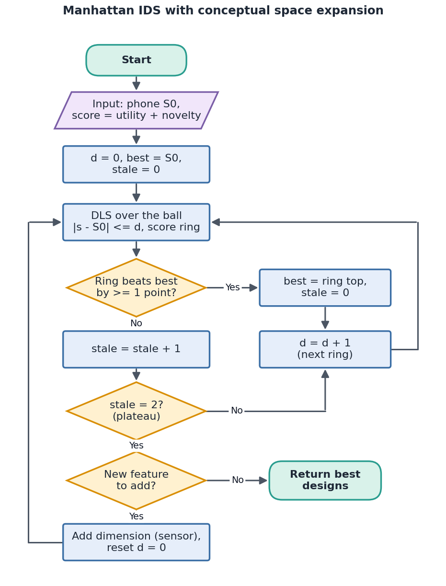
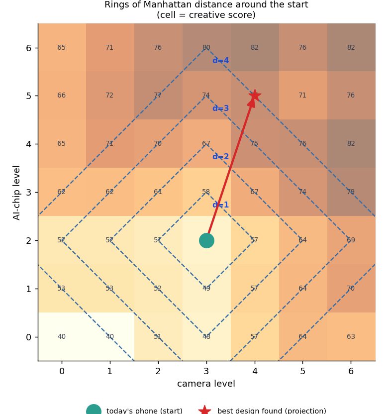
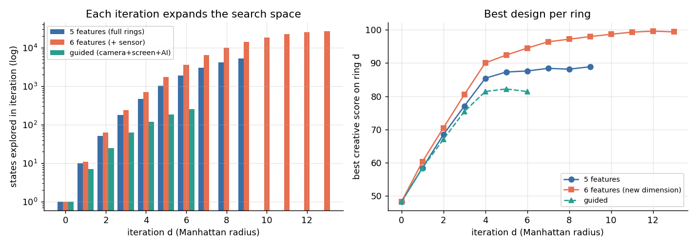
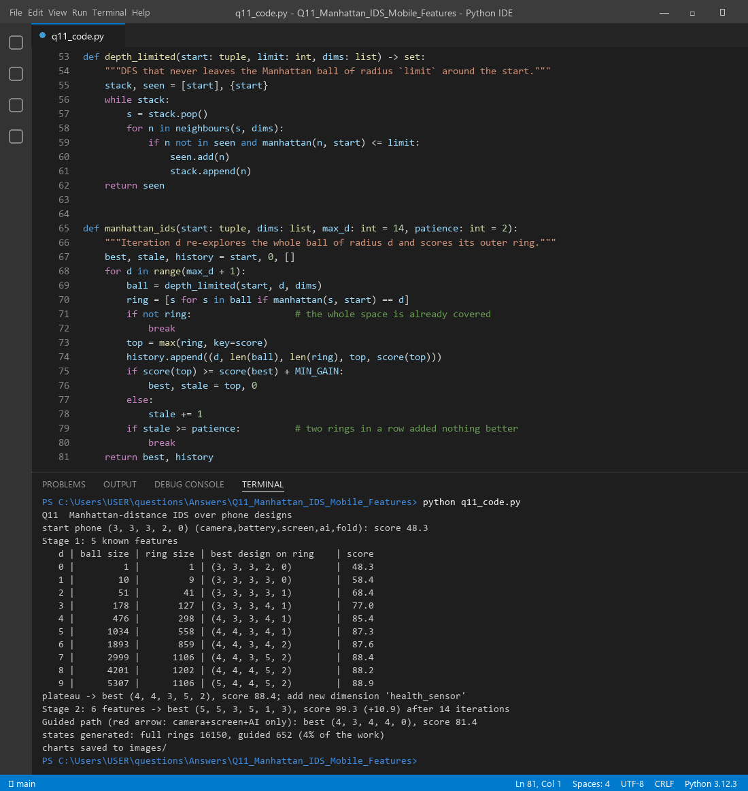

Think of every possible phone as a point on a map, with one axis per feature (camera, battery, screen, AI chip, foldability). Today's phone sits in the middle, like the green dot in Diagram 4. In round 1 we look at every phone that is one small step away. In round 2 we look two steps away, and so on. Each round draws a bigger ring around the start, so each iteration expands the search space. When the rings stop giving better ideas, we do something bolder: we add a new axis to the map (a new feature nobody sells yet). That is expanding the conceptual space, not just searching it.
| Reductionist model | Connectionist model | |
|---|---|---|
| Core idea | Break the whole into parts, understand each part, then build up the whole ("one part at a time") | Meaning comes from the connections between many simple units, like neurons in a network |
| View of a phone | Camera, battery and screen are judged one by one and the scores are added | Features affect each other: camera + AI chip = computational photography, bigger screen drains the battery |
| Creativity | Improve one part at a time (incremental) | Find new links and associations between parts (combinational, "everything connects to everything else") |
| Strength | Clear, explainable, easy to test | Captures interactions and the whole system (holism) |
| Weakness | Misses effects that only appear when parts combine | Harder to explain why a result is good |
A good design agent uses both. In our model the search moves are reductionist (change one feature by one level), while the evaluation can be connectionist: a learned network that scores how the features work together.
| Search term | Meaning for phone features |
|---|---|
| State | One phone design, e.g. (3, 3, 3, 2, 0) |
| Start state (green dot) | Today's phone |
| Action | One feature up or down by one level |
| Iteration d / depth limit | Manhattan radius: explore every design with |s − S0|1 ≤ d |
| Ring d (Diagram 4's squares) | Designs at exactly distance d, which are new in this iteration |
| Preferred path (red arrow) | A chosen direction, e.g. only camera, screen and AI may change |
| Conceptual space expansion | Adding a new dimension, e.g. an IoT health sensor |
function ManhattanIDS(S0, dims, score):
best ← S0; stale ← 0
for d = 0, 1, 2, ...: # each iteration = a bigger ring
BALL ← DLS(S0, limit = d, dims) # all s with |s - S0|_1 ≤ d
RING ← { s in BALL : |s - S0|_1 = d }
if RING is empty: break # whole space covered
top ← argmax score(s) over RING
if score(top) ≥ score(best) + 1: best ← top; stale ← 0
else: stale ← stale + 1
if stale = 2: break # plateau: rings stopped paying off
return best
function DLS(S0, limit, dims): # depth-limited DFS inside the ball
STACK ← [S0]; SEEN ← {S0}
while STACK not empty:
s ← STACK.pop()
for each feature i in dims, step in {-1, +1}:
n ← s with feature i changed by step
if n valid and n not in SEEN and |n - S0|_1 ≤ limit: SEEN.add(n); STACK.push(n)
return SEEN
# creative outer loop
best5 ← ManhattanIDS(S0, 5 features)
if plateau: add "health_sensor" axis; best6 ← ManhattanIDS(S0 + (0), 6 features)

The start phone scores 48.3: utility 64.4, novelty 0 because it is already on the market. At d = 1 the best step is AI 2 → 3, which gives utility 69.6 and novelty 25 (one step from the nearest market phone): 0.75 × 69.6 + 0.25 × 25 = 58.4.
| d | ball size | new ring | best design on ring (cam, bat, scr, AI, fold) | score |
|---|---|---|---|---|
| 0 | 1 | 1 | (3, 3, 3, 2, 0) today's phone | 48.3 |
| 1 | 10 | 9 | (3, 3, 3, 3, 0) | 58.4 |
| 2 | 51 | 41 | (3, 3, 3, 3, 1) | 68.4 |
| 3 | 178 | 127 | (3, 3, 3, 4, 1) | 77.0 |
| 4 | 476 | 298 | (4, 3, 3, 4, 1) | 85.4 |
| 5 | 1034 | 558 | (4, 4, 3, 4, 1) | 87.3 |
| 6 | 1893 | 859 | (4, 4, 3, 4, 2) | 87.6 |
| 7 | 2999 | 1106 | (4, 4, 3, 5, 2) best | 88.4 |
| 8 | 4201 | 1202 | (4, 4, 4, 5, 2) | 88.2 |
| 9 | 5307 | 1106 | (5, 4, 4, 5, 2), gain < 1, so plateau | 88.9 |
Early rings give big jumps (+10 per ring). After d = 4 the gains shrink to almost nothing, while the ball keeps growing (5307 designs at d = 9). That is the signal to stop searching harder and start thinking differently.

In Manhattan distance the rings are diamonds. Diagram 4 draws the same idea as square loops spiralling outwards.
Exploring every ring in every direction is expensive. Diagram 4's red arrow suggests following a preferred path. We let only camera, screen and AI change (a "camera + smart features" strategy). The real run shows the trade-off:
| Expansion strategy | Best design | Score | States generated |
|---|---|---|---|
| Full rings, all 5 features | (4, 4, 3, 5, 2) | 88.4 | 16150 |
| Guided path (camera + screen + AI) | (4, 3, 4, 4, 0) | 81.4 | 652 (4% of the work) |
The guided path is about 25 times cheaper but misses ideas on the battery and foldable axes. A practical plan is to use guided paths for quick ideas, then full rings around the most promising area.
Searching inside the same five features hits a plateau at 88.4. So we change the space itself and add a new dimension: an IoT health sensor (levels 0 to 3). No phone on the market has it, so it brings both usefulness and novelty. Re-running the rings in 6 dimensions finds (5, 5, 3, 5, 1, 3) with score 99.3, a jump of +10.9 that no amount of extra searching in the old space could reach. In course terms, adding a sensor modality changes the space, not merely the data. It is the closest thing to transformational creativity in Boden's sense.

q11_code.py runs the full-ring search, the guided search and the 6-dimension search, and draws both charts.

Files in this folder: q11_code.py (source), q11_code.ipynb (Colab/Jupyter version, already run),
q11_output.txt (console output), images/ (all figures).